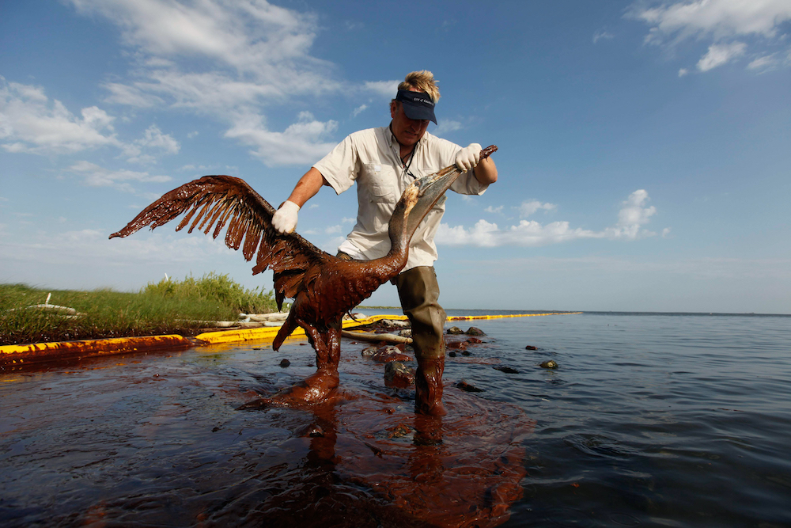
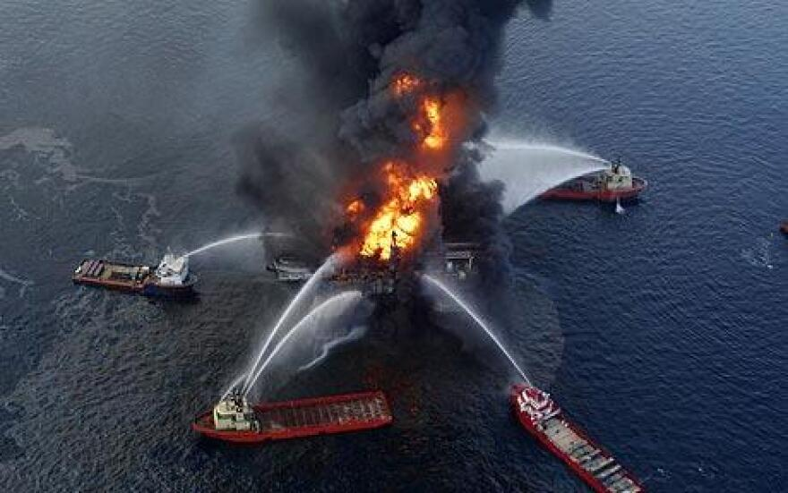
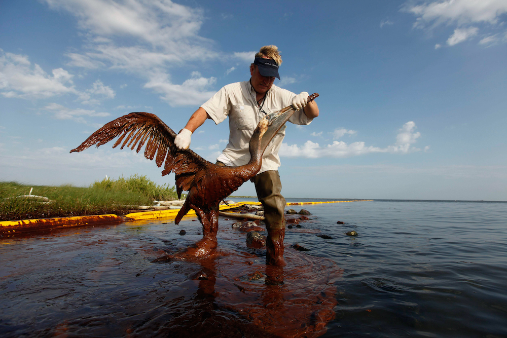
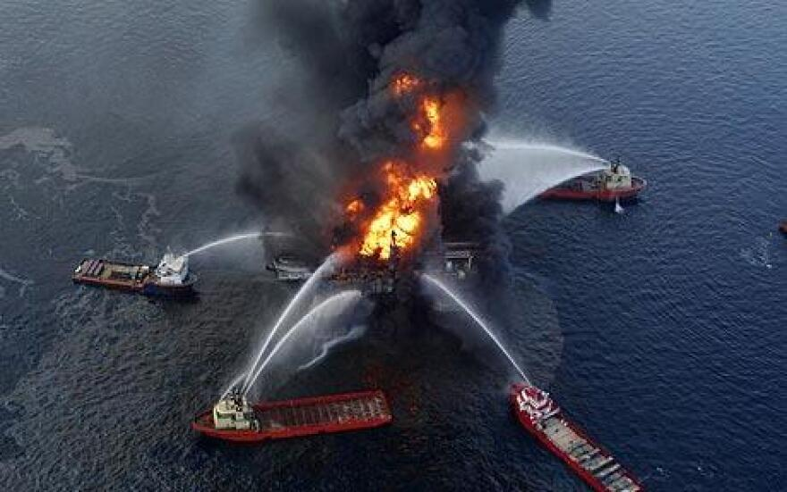
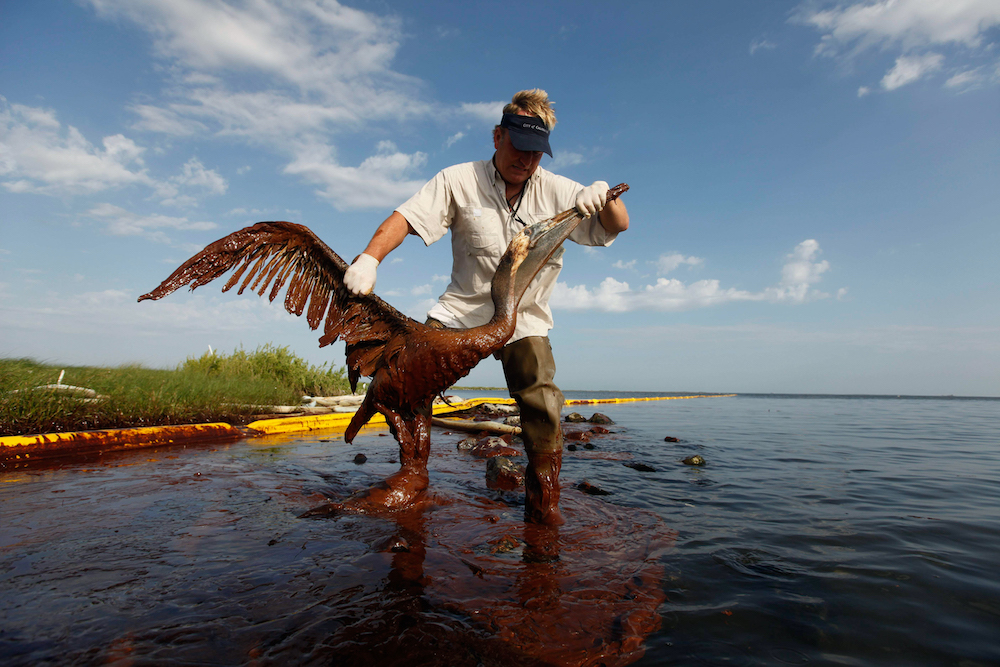
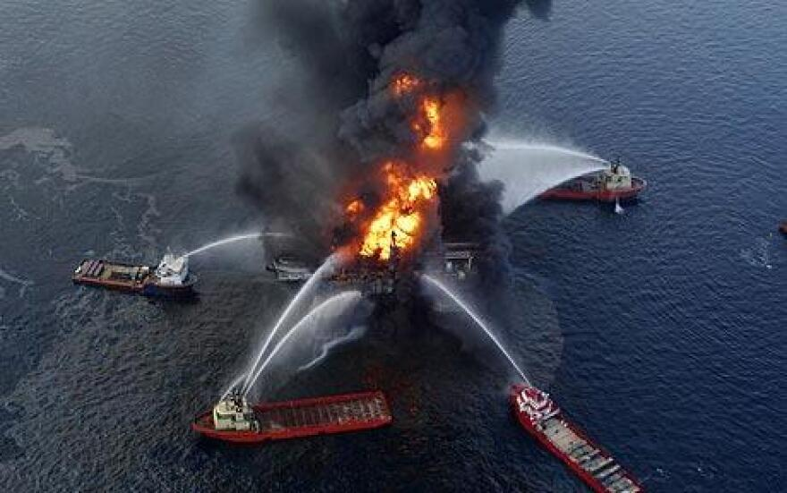

Oil spills pose a severe threat to the global environment and wreak havoc on marine wildlife and biodiversity. These disasters destroy ecosystems by releasing crude oil into the environment, causing long-lasting damage like habitat destruction, contaminated food sources, and disruption of lifestyle for many animals.
The 2010 BP oil spill in Australia released 205 million gallons of oil into the Gulf of Mexico, causing extensive ecological harm that contaminated many marine habitats. This spill harmed and/or killed over 82,000 birds of 102 species, 6,165 sea turtles , as many as 25,900 marine mammals, and a vast number of fish.
The immediate impact of oil spills can disrupt food chains and thus jeopardise the equilibrium of ecosystems. For humans, oil spills have long term effects on tourism and health risks when consuming seafood. These impacts emphasise the necessity to find effective and efficient ways to mitigate and reduce the occurrence of oil spills.



Advocate for and transition towards sustainable energy sources, like solar, wind, and hydroelectric. Reducing dependence on fossil fuels decreases the demand for oil extraction and transportation, subsequently lowering the likelihood of oil spills.

Engage in local community initiatives focused on coastal cleanup and restoration. Participate in efforts to remove oil and debris from shorelines to help mitigate the immediate impact of spills and protects vulnerable ecosystems.

Volunteer with organizations that specialize in wildlife rehabilitation. These centers play a crucial role in rescuing and treating animals affected by oil spills, working towards their recovery and eventual release back into the wild.
Oh no!!! Our lovely neighbourhood penguin has gotten trapped in an oil spill.
A penguin's fur coat helps them stay warm and afloat.
Click and wipe off all of the oil to save our penguin friend!